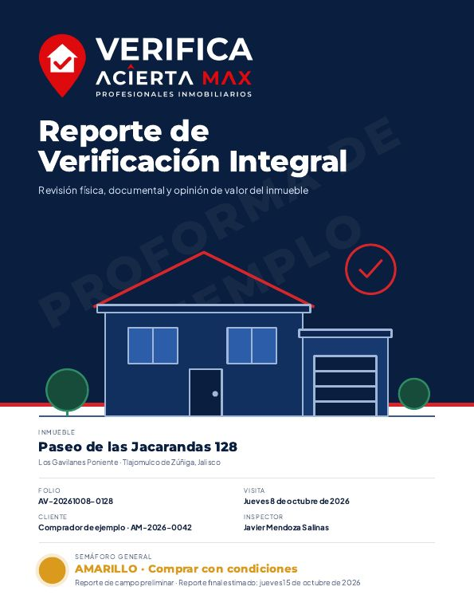

Por qué revisar antes de firmar
Una ficha dice recámaras, baños y metros. No dice si hay humedad detrás de un muro, si una pastilla del tablero se sobrecalienta, si hay una fuga de gas o si la construcción coincide con la escritura. Tampoco dice si el vendedor puede vender, si hay un gravamen o si el condominio tiene adeudos. En Jalisco se registraron 483 reclamaciones contra inmobiliarias entre 2024 y agosto de 2026, por anticipos que no se devuelven, rescisiones, entregas fuera de plazo y defectos de construcción (PROFECO Jalisco, citado por N+, 4 de septiembre de 2026). Revisar antes cuesta una fracción de lo que cuesta descubrirlo después.
Qué revisamos en el inmueble
Qué revisamos en los documentos
Identificación y facultades de quien vende, escritura e inscripción en el Registro Público, certificado de libertad de gravamen, estado civil y régimen matrimonial, poderes y sucesiones, predial, agua, luz, cuotas de condominio, régimen de condominio, licencias y habitabilidad, uso de suelo y ficha urbanística con COS y CUS, y ocupación. Si un trámite está en proceso, el reporte lo marca con su fecha estimada.
Cómo funciona
- Cotizas
Por WhatsApp, con la dirección y los m² aproximados. - Visitamos
De 2 a 4 horas en el inmueble, con instrumentos y registro fotográfico. - Revisamos documentos
Los que entrega el vendedor y los trámites de gabinete necesarios. - Te entregamos el reporte
Semáforo, hallazgos con evidencia, costos estimados de reparación y lista para la firma.
Así se ve el reporte

Un reporte de 16 páginas: resumen ejecutivo con recomendación, tablero por sistema, mediciones en gráficas con rangos, hallazgos con imágenes térmicas, revisión jurídica explicada en sencillo, trámites en proceso con fecha, opinión de valor con comparables reales, presupuesto de reparaciones y plan de acción.
Descargar reporte de muestra (PDF)Precio
Desde $45 por m² revisado, con un mínimo de $3,500 MXN, en la Zona Metropolitana de Guadalajara. Una casa de 280 m² cuesta alrededor de $12,600. Los trámites de gabinete, como el certificado de libertad de gravamen del Registro Público, se cobran a su costo oficial más la gestión, y siempre se desglosan por separado.
Preguntas frecuentes
- ¿Cuánto tarda el reporte?
- La visita dura de 2 a 4 horas. El reporte de campo se entrega el mismo día o al siguiente; el final, normalmente en 5 días hábiles, por el certificado de libertad de gravamen.
- ¿Sustituye a un avalúo o a un peritaje?
- No. Es una revisión preventiva de alcance básico, sin pruebas destructivas. Si un hallazgo lo amerita, el reporte recomienda al especialista.
- ¿Sirve para preventas?
- Sí, en su parte documental: quién vende y con qué facultades, propiedad del terreno, licencias, contrato y garantías y la cuenta que recibe el dinero.
- ¿Quién hace la revisión?
- Personal de Acierta Max con procedimiento estandarizado, apoyado por VERI, nuestro asistente de inteligencia artificial que revisa cada foto y medición en sitio. El reporte lo firma un asesor de Acierta Max.
- ¿En qué zonas?
- Guadalajara, Zapopan, Tlaquepaque, Tonalá, Tlajomulco de Zúñiga y El Salto.